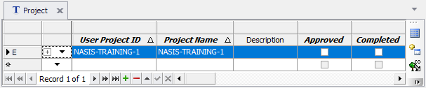
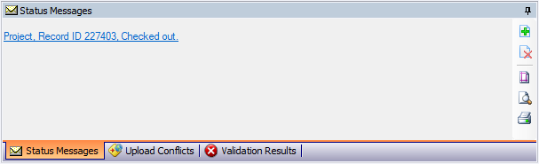
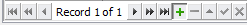
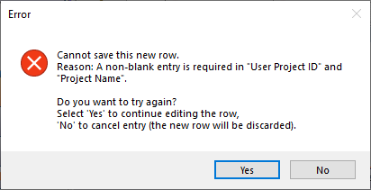
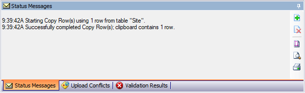

Exercise 4.1 – Check Out Data
Checking Out Data
Checking out data is required in order to edit data. Before we can check it out, you must have the data in your selected set. In most cases, that means running a query against the national database and against the local database. For this exercise, a temporary project has been created with the project name matching your NASIS username. Run the query “Project by project name” found in the NSSC Pangaea folder and use your NASIS username as the project name, for example “Hammerly, John”. Remember, you will need to first query the national database, accept the data and then run against local database to get it into your selected set. Now open the project table to see your project.
Notice the grey inactive edit buttons at bottom of the screen since I have not checked out this row those actions are not available.
Highlight row of the project you just loaded by clicking it, then click the check out selected trees button:
A letter “E” will appear in the row you checked out indicating edits can now be completed on the data

The status messages window will also update indicating which record was checked out:

Take a screenshot of the row checked out and save to submit to your exercise submission folder.
Checking In Data
You can check data out and back in again as long as you did not make any changes. For this exercise we will not make changes. Check the row back in using the “Check in Selected Trees” button:
Submit Screenshot
Submit your screenshot by placing it in your exercise submission folder to complete the exercise.
End of Exercise
Exercise 4.2 – New Data
Creating New Data
New data is added by first opening a table you want to add data to for this exercise open the project table. Use green plus button at bottom left of screen to add a new row:

Alternatively, you can use your mouse to click in a blank row, in the column you want to add data to. When creating new project, there are some data columns that are required. The columns in bold text indicate which are required. Some required data must be manually populated. Other required data will be populated with a default if not altered (examples: project approved and completed will populate unchecked).
There is not a visual indicator as to which column must be manually populated, but generally, the checkboxes will default all others will not. if required data is not populated, an error will appear if you end your edit before populating it with data:

As outlined in the message, you can choose to go back and fix the issue, or you can give up and the new row you were attempting to add will be removed.
Enter “NASIS-BASIC-TEMP” into the User Project ID column. For the Project Name, enter your NASIS username and add a space and type NEW after it. To finish adding the row click the green checkmark button or click on your screen away from the row.
Your new data now exists locally, but the changes have not been uploaded to the National Database. To do this click the “Upload All Changes to National Database” button:

Finally, after completing the upload, check the data back in using the method covered in the previous exercise.
Submit Screenshot
Submit your screenshot by placing it in your exercise submission folder to complete the exercise.
End of Exercise
Exercise 4.3 – Edit Data
Query Data
For this exercise we will query, copy an existing site, and then edit the copy. Use the NSSC Pangaea query “POINT – Sites by User Site ID”. Use site as your target table. Use “NASIS Training Example 1” for your User Site ID and get the results into your selected set.
Copy and Paste Data
Select the row in the site table you loaded into your selected set and use the copy selected rows button to copy the site:

A status message will display indicating it was successfully copied.

Now paste the data using the paste new rows/trees button:  button highlighted")
Edit Data
Since you made a copy of the data with the new data you pasted you can immediately start editing data. If you were to edit existing data, you would need to check it out first. Add your NASIS username to the end of the User Site ID and change the coordinate source to “unknown” notice you can only enter the choices listed, then end your edit. Then expand the site table to view the child tables. The site observation table should now be visible. Add a site observation date matching today’s date and add your name to the data collector column.
Upload Changes
When you have completed the data edits, upload all changes to National Database, and check the data back in. Your mentor will review the NASIS entry.
End of Exercise